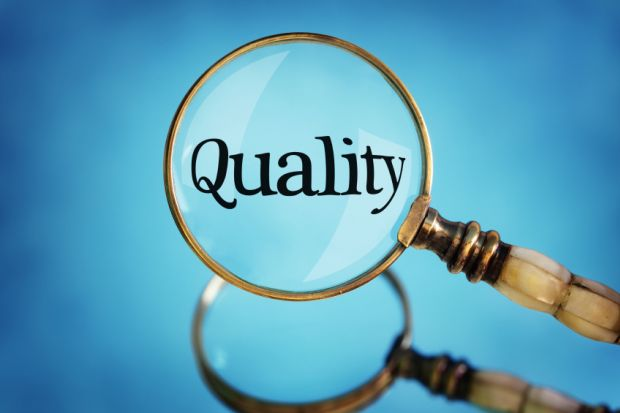
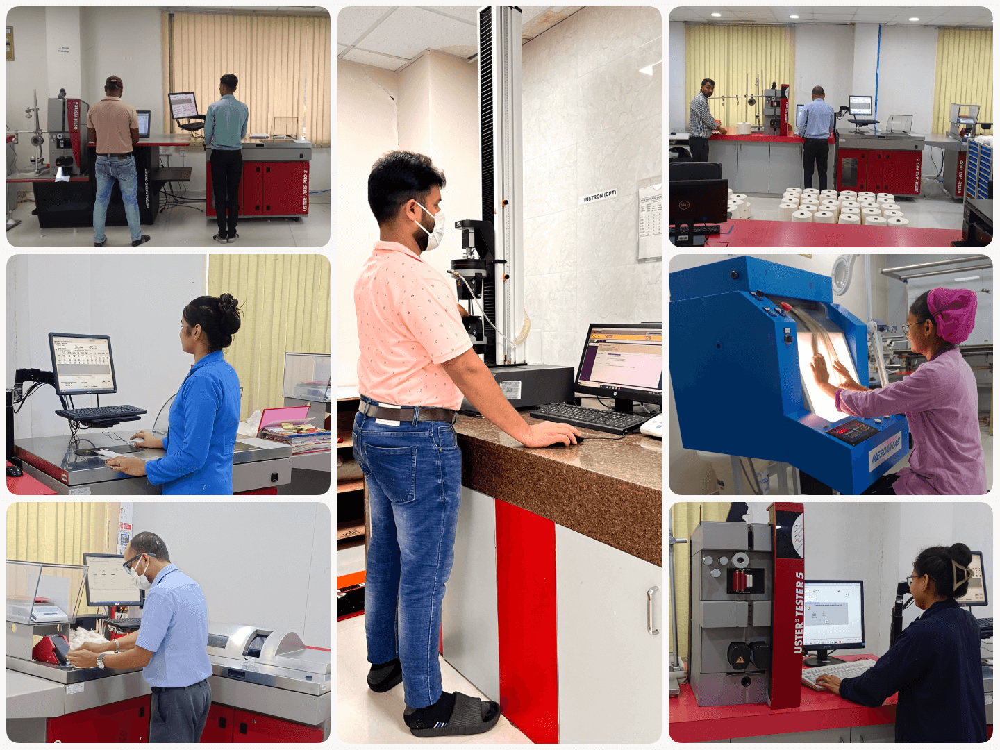

Every yarn produced by Sintex Yarns undergoes a comprehensive and rigorous testing regime at each stage of manufacturing—from raw material selection to final dispatch. Advanced laboratory facilities and standardized testing protocols are employed to evaluate key quality parameters such as yarn count, strength, evenness, elongation, twist, hairiness, and shade consistency.
Every yarn produced by Sintex undergoes rigorous testing and quality checks, ensuring it meets the highest global standards
Tools like AFIS, HVI, UT 6, UTJ, and Classimat 5 ensure precise measurement and quality assessment throughout production.
Uster Vision Shield with Magic Eye eliminates impurities for exceptional product quality.
Delivers real-time monitoring and defect control during winding, ensuring consistent quality in finished yarns.
Quality lies at the heart of excellence. Backed by advanced Quality Management Systems (QMS) and a steadfast Zero-Defect principle, every strand of yarn produced at Sintex Yarns is a testament to precision and consistency, meeting and exceeding global benchmarks.
